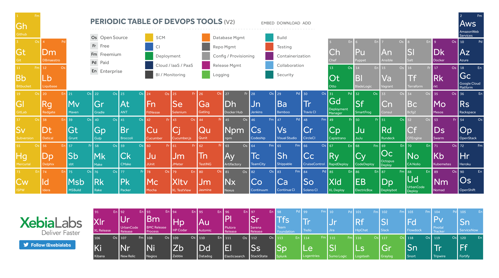
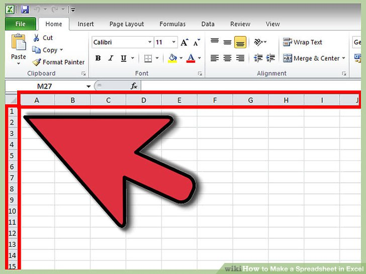
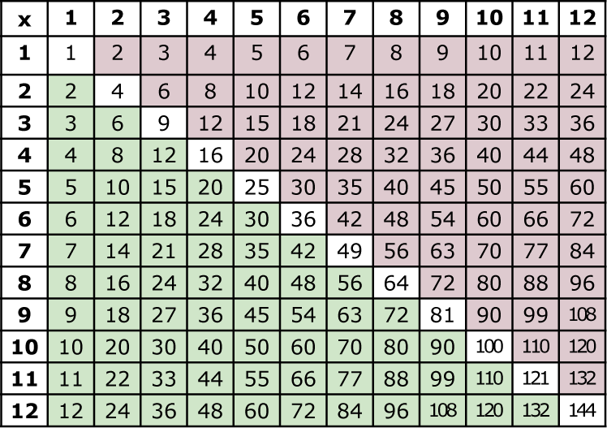

| Firstname | Surname | favourite sauce | hometown |
|---|---|---|---|
| Reece | Jefthas | mayo | strandfontein |
| Nkosilathi | Tauro | barbecue | califonia |
| jerome | willaims | tip | levadale hill |
| yassen | davids | tomato sauce | brazil rio |
| ryan | thomas | mayo | oudthsoorn |
| alex | fortuin | tomato sauce | cape town |
| wahaaj | davids | mayo | pretoria |
| nelisa | bali | barbacue | cape town |
| aqhamile | cimani | barbacue | ngcobo |
| omar | salie | peri-peri | cape town |
| chad | wyngaard | peri-naise | madrid |
| muneer | carolus | chilli | caoe town |
| zoe | thomas | marinate | russia |
| malcolm | johnson | peri-naise | guglethu |
| zadabibi | armein | mayo | rondebosch |
| brandon | brevis | marmite | khayelitsha |
| ilyaaz | isaacs | chilli | handover park |
Simple Periodic Table Chart-en.svg Part of a series on the Periodic table Periodic table forms Periodic table history Sets of elements By periodic table structure By metallic classification By other characteristics Elements List of chemical elements .. Properties of elements Data pages for elements Book Category Chemistry Portal v t e The periodic table is a tabular arrangement of the chemical elements, ordered by their atomic number, electron configuration, and recurring chemical properties, whose adopted structure shows periodic trends. Generally, within one row (period) the elements are metals on the left, and non-metals on the right, with the elements having similar chemical behaviours being placed in the same column. Table rows are commonly called periods and columns are called groups. Six groups have accepted names as well as assigned numbers: for example, group 17 elements are halogens; and group 18 are noble gases. Also displayed are four simple rectangular areas or blocks associated with the filling of different atomic orbitals.
A spreadsheet is an interactive computer application for organization, analysis and storage of data in tabular form.[1][2][3] Spreadsheets are developed as computerized simulations of paper accounting worksheets.[4] The program operates on data entered in cells of a table. Each cell may contain either numeric or text data, or the results of formulas that automatically calculate and display a value based on the contents of other cells. A spreadsheet may also refer to one such electronic document.
A truth table is a mathematical table used in logic—specifically in connection with Boolean algebra, boolean functions, and propositional calculus—which sets out the functional values of logical expressions on each of their functional arguments, that is, for each combination of values taken by their logical variables (Enderton, 2001). In particular, truth tables can be used to show whether a propositional expression is true for all legitimate input values, that is, logically valid.

Mathematical tables are lists of numbers showing the results of calculation with varying arguments, before calculators were cheap and plentiful, people would use such tables to simplify and drastically speed up computation. Tables of logarithms and trigonometric functions were common in math and science textbooks. Specialized tables were published for applications such as astronomy, celestial navigation and statistics
